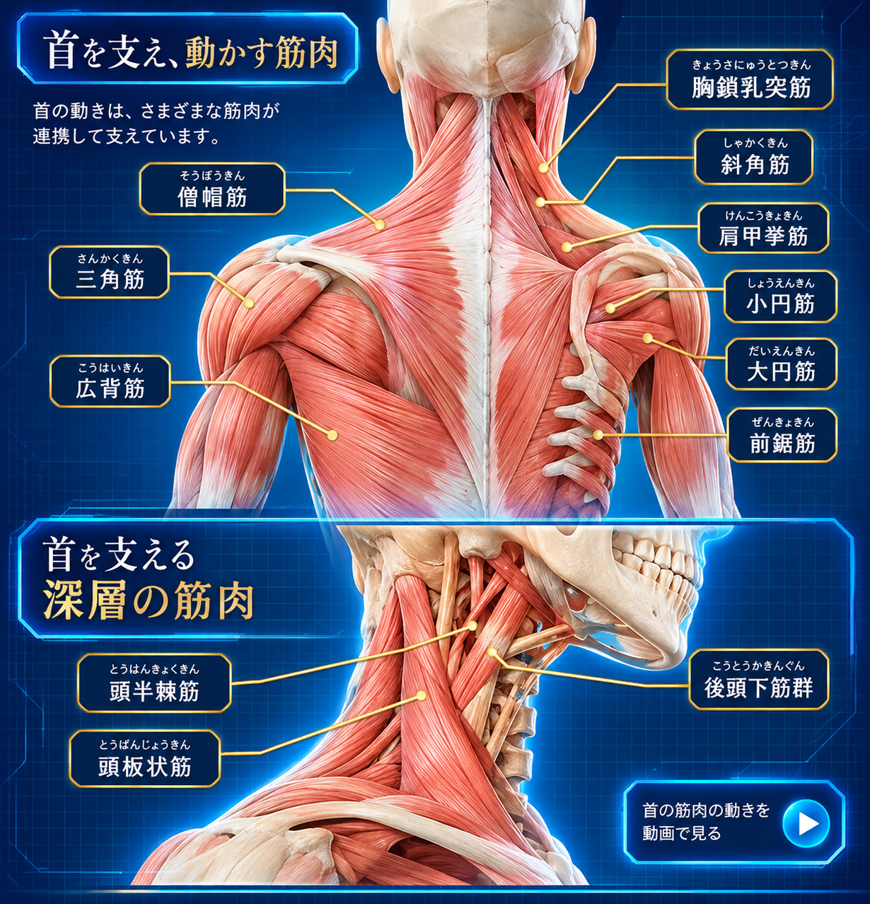

身体を選ぶ
気になる首や肩、頭部などの部位から見ていきます。
首には、頭を支えて向きを変えるための関節や筋肉だけでなく、脳と身体をつなぐ脊髄、神経、血管などが集まっています。首だけを見るのではなく、周囲との連動を知ることが大切です。

首の骨格をつくる頸椎（けいつい）は、上からC1〜C7までの7個の椎骨で構成されています。最上部のC1は環椎（かんつい）、C2は軸椎（じくつい）と呼ばれ、頭部のうなずきや回旋に重要な役割を担います。
頸椎と頸椎の間には椎間板があり、骨同士の間隔を保ちながら荷重を分散します。椎骨の後方には脊髄が通る脊柱管があり、各椎骨の間からは頸神経が出ています。
首は複数の関節が協調して動きます。日常の動作では、これらの動きが組み合わさっています。
あごを胸に近づけるように、首を前へ曲げる動き。
視線を上へ向けるように、首を後ろへ反らす動き。
耳を肩へ近づけるように、首を左右へ傾ける動き。
顔を左右へ向けるように、首を回す動き。
振り向きながら少し傾けるなど、複数の動きを組み合わせる動き。
頭の重さを支え、視線を保ちながら姿勢を調整する働き。

首の表層から深層まで、頭部・頸椎・肩甲骨につながる筋肉を図で確認できます。
首の前外側に位置し、頭頸部の回旋や側屈、両側で働く際の屈曲などに関わります。
首の側面にある筋群。頸椎の側屈や安定、呼吸時の補助的な働きに関わります。
首から背中上部に広がり、肩甲骨の動きや頭頸部の姿勢調整に関わります。
頸椎と肩甲骨をつなぎ、肩甲骨を引き上げる働きや首の側屈に関わります。
首の後外側に位置し、頭や首を後ろへ反らす動きや回旋に関わります。
首の深部にある筋群で、頭頸部の伸展や姿勢の保持に関わります。
頭蓋骨と上位頸椎をつなぐ小さな筋群。頭の細かな向きの調整に関わります。
頸椎から肋骨へつながり、首の安定や呼吸時の補助的な働きに関わります。
首の後ろ側から肩・背中に広がる筋肉と、首の深い層にある筋肉を見比べてみましょう。

図は筋肉の位置関係を理解するためのイメージです。実際の筋肉の重なりや形状には個人差があります。
脊髄は脳と身体をつなぐ中枢神経の通り道です。頸椎の間からは頸神経が出て、首・肩・腕などの感覚や運動に関わる情報を伝えます。
首の周辺には神経や血管など重要な組織が集まっています。首を強く押したり、急激にひねったりすることは避け、違和感があるときは無理をしないことが大切です。
頭の重さを支え、視線や頭の向きを細かく調整します。
僧帽筋や肩甲挙筋などを介して、首と肩甲骨の動きが関係します。
肋骨や胸椎の動き、呼吸に伴う姿勢の変化が首の負担にも影響します。
胸椎や肩甲骨周囲の動きと、首の姿勢は互いに関係しています。
頸神経は腕や手の感覚・運動に関わる神経の経路につながります。
全身の姿勢や重心の変化は、首の位置や頭の向きにも関係します。
気になる首や肩、頭部などの部位から見ていきます。
骨・関節・筋肉・神経の基本的な役割を確認します。
首と肩甲骨、胸郭、背中などの関係をたどります。
首の動きと全身の姿勢・動作との関係を考えます。
首の仕組みを知ることは、肩や背中、姿勢との関係を知る入り口です。気になる部位から、身体全体のつながりを見ていきましょう。